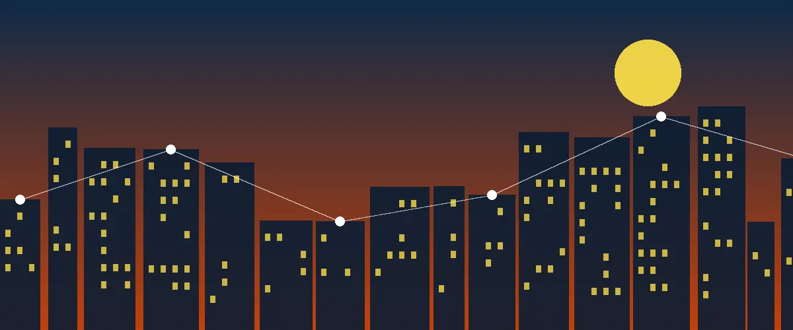

Search by area
Lagos is big. Filter by neighbourhood such as Lekki, Ikeja, Yaba, or Victoria Island to find what is close to you.

Find trusted local businesses across Lagos, filter by area, and save the ones you love.
Browse the directoryThese four businesses have the highest customer ratings in our directory.
Loading top-rated businesses…
Lagos is big. Filter by neighbourhood such as Lekki, Ikeja, Yaba, or Victoria Island to find what is close to you.
Tap Save on any business and it stays on this device, so your shortlist is ready the next time you visit.
Open any listing to see the address, opening hours, phone number, rating, and a short description.